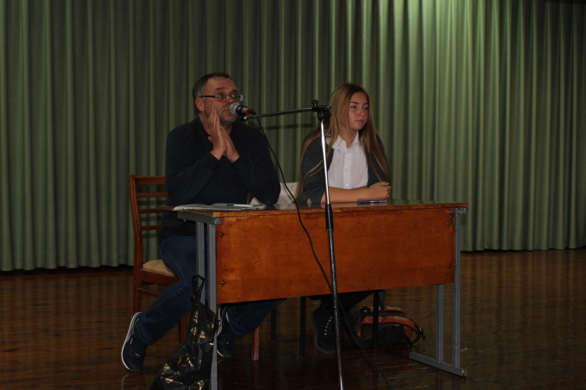
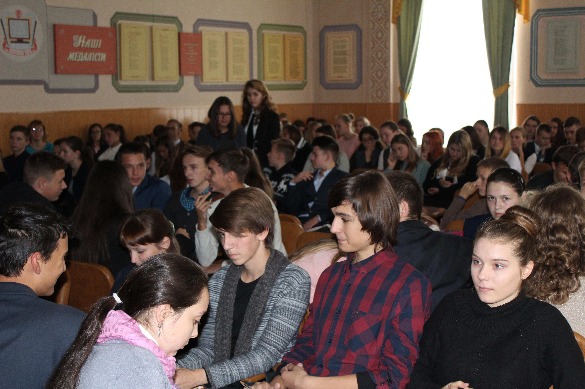
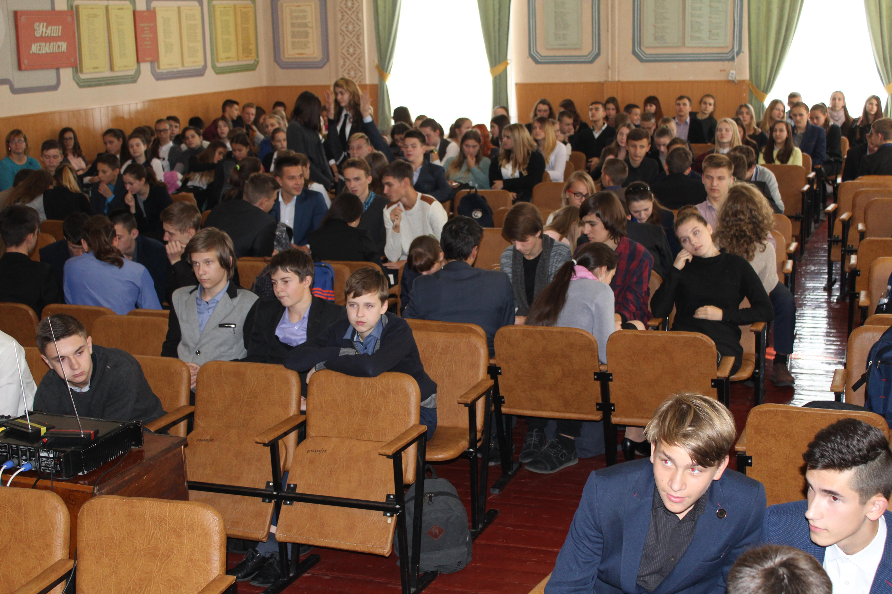
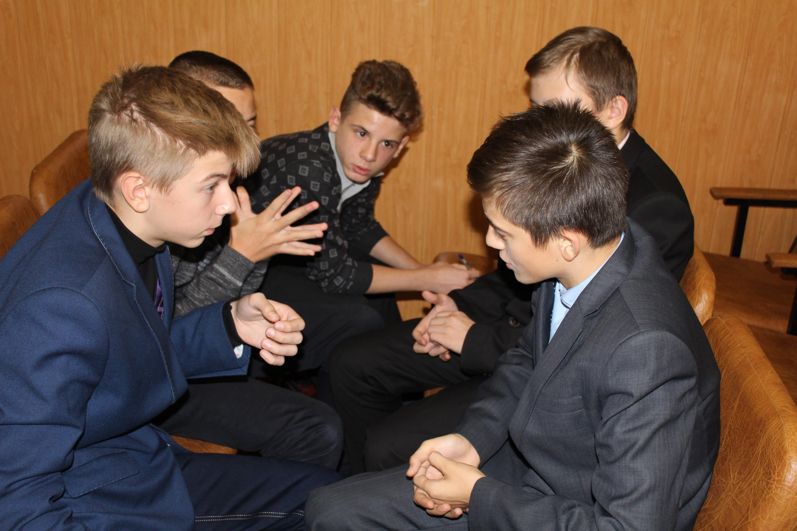

Ліцейний тур "Що? Де? Коли?"
7 вересня відбулась ліцейна гра «Що?Де?Коли?». В турнірі прийняли участь 14 команд, різної вікової категорії, різних курсів, спробувати свої сили могли всі бажаючі. Переможці визначались серед 1 – 2 курсів, та 3 – 4.
Підсумовуючи результати змагань:
в молодшій віковій групі
І місце поділили команди: ЛІН – 1 (“Casual community”) та ЛІН-2 («Стоунхендж»), ІІ місце поділили команди ІТЕ – 2 «Гострі перці», ІТН – 2 «Spicy», ФМН – 2 «Бригада 47», ІІІ місце ІТЕ – 1 «Error 404»»; в старшій віковій групі
ІІІ місце посіла команда ІТН-3(«Вершки суспільства»), ІІ місце – ІТЕ-4(«Клептомани»), а І – постійний лідер ігор «Що?Де?Коли?» - команда ФМН-3(«Лимон»). Гра видалась цікавою та захоплюючою і ми бажаємо удачі командам переможцям, котрі братимуть участь у іграх вищого рівня.
Підсумовуючи результати змагань:
в молодшій віковій групі
І місце поділили команди: ЛІН – 1 (“Casual community”) та ЛІН-2 («Стоунхендж»), ІІ місце поділили команди ІТЕ – 2 «Гострі перці», ІТН – 2 «Spicy», ФМН – 2 «Бригада 47», ІІІ місце ІТЕ – 1 «Error 404»»; в старшій віковій групі
ІІІ місце посіла команда ІТН-3(«Вершки суспільства»), ІІ місце – ІТЕ-4(«Клептомани»), а І – постійний лідер ігор «Що?Де?Коли?» - команда ФМН-3(«Лимон»). Гра видалась цікавою та захоплюючою і ми бажаємо удачі командам переможцям, котрі братимуть участь у іграх вищого рівня.
|  |  |
|  |  |